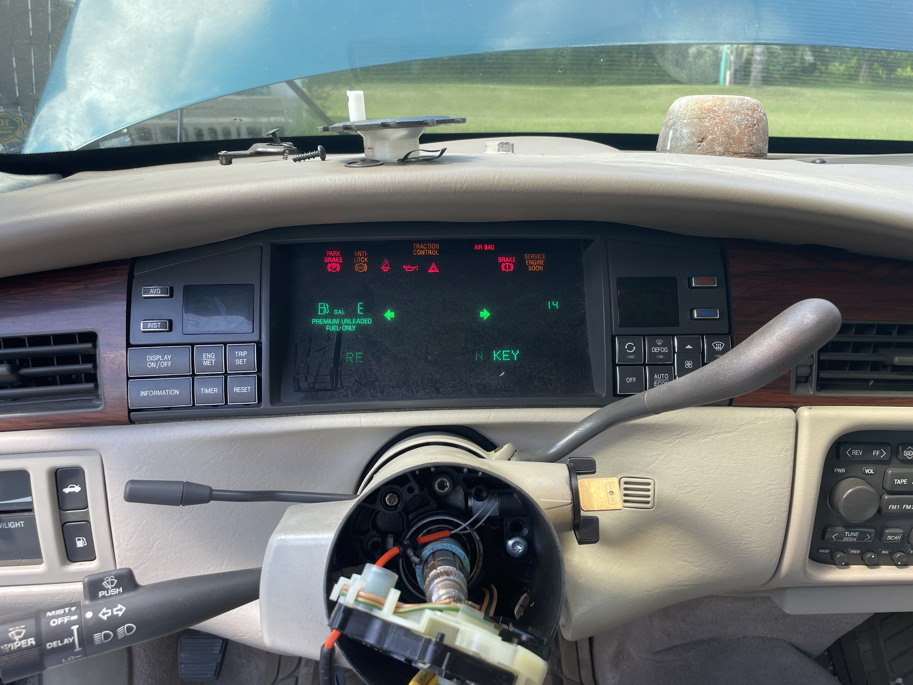

Ongoing Systems Restoration Project
1996 Cadillac DeVille Restoration
Documenting the inspection, troubleshooting, and restoration process of a 1996 Cadillac DeVille with a 4.6L Northstar V8 after nearly two decades of sitting.

Objective
This was my late grandfather's 1996 Cadillac DeVille. Upon finding out it had been sitting for the last
20 years and considering I was in the area I wanted to take the opportunity to see whether it could be
brought back into running condition.
No members of my family were sure why it had been parked, and given both my budget and the difficulty of the
project I wanted to see how far I could get and how much I could learn.
Project Context
Based off insurance slips found inside the glovebox of the car I know it was last insured in 2007.
Given what my family has told me and the state of the vehicle I was decently certain it had not been started
once in those 20 years. There was also the issue of not possessing the key which used a VATS II system to disallow
the engine from starting.
Due to these factors there were many different steps I needed to take before even attempting to start this engine for
first time.
My Contribution
- Created a staged inspection and restoration plan before attempting startup.
- Researched key, ignition, and VATS immobilizer requirements for the vehicle.
- Inspected initial vehicle condition including tires, battery area, fluids, body condition, and visible rust.
- Planned safe engine preparation steps including oil inspection, spark plug removal, and cylinder lubrication.
- Identified major systems requiring inspection before road use: fuel, brakes, electrical, cooling, tires, and frame condition.
- Documented the process through photos, notes, and troubleshooting decisions.
Initial Restoration Plan
- Confirm ownership paperwork and key access.
- Install and verify battery connections.
- Inspect frame, suspension points, and visible rust.
- Clean interior, trunk, and engine bay.
- Remove spark plugs and add light lubrication to cylinders.
- Attempt to rotate engine by hand before using the starter.
- Drain or pump old fuel before running the engine.
- Inspect oil, coolant, belts, hoses, plugs, and air filter.
- Inspect brakes and tires before any road movement.
Engineering Relevance
This project demonstrates practical troubleshooting, risk assessment, documentation, and system-level thinking. Returning a long-stored vehicle to service requires understanding how mechanical, electrical, fuel, cooling, braking, and control systems interact rather than simply replacing parts at random.
Challenges
- No working ignition key at the start of the project.
- Vehicle has been sitting for approximately 20 years.
- Unknown fuel condition and possible fuel system contamination.
- Unknown engine condition prior to hand rotation.
- Possible electrical connection corrosion or battery terminal issues.
- Need to avoid damaging the engine during first startup attempt.
Work Done
This is where I'll document what I've done and the current status of the project.
Due to the large nature of this project, I figure it'll be easiest to document each step as I work.
Ignition Cylinder Replacement
After paying a locksmith to come out to the car and tell me there was nothing he could do, I took it upon myself to dismantle the steering wheel and replace the ignition cylinder myself. This gave me a working physical key. The next step would be bypassing the Vehicle Anti-Theft System (VATS) that GM employed throughout the late 80s and 90s.
These keys contain a small resistor pellet that the vehicle measures when the key is inserted. If the resistance is incorrect, the ECU prevents the engine from starting. Thankfully GM only used fifteen different resistor values, meaning I could determine the correct one by splicing different resistors into the VATS wires until the system accepted the key and allowed a start attempt.

VATS Resistor Bypass
After ordering one of each of the fifteen different resistors off eBay I was ready. The week before I had chosen to cut and solder a female connector onto each end of the VATS wires that connected to the large wiring module. This would mean I wouldn't have to worry about poor connection and the transition time from resistor to resistor would be much quicker.
It did take me 11 tries, each with a 3 minute cooldown but on that 11th attempt the car turned over
for what I must assume is the first time in 20 years. It is important to note that before I did this
I pulled all 8 sparkplugs out of their cylinders and poured a little automatic transmission fluid
to loosen things up and provide some lubrication.